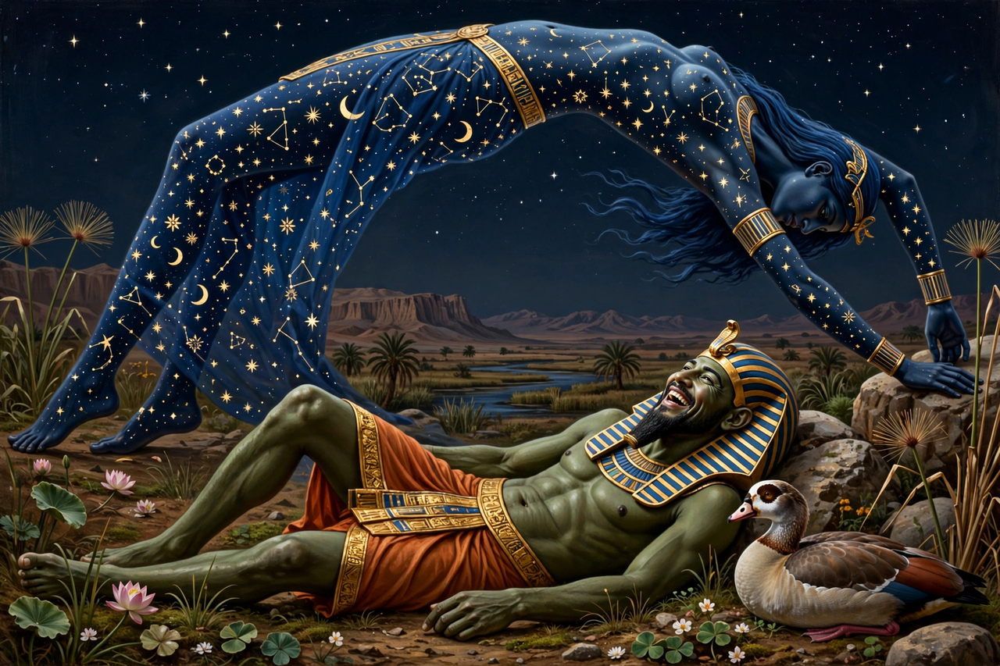

From Wikipedia, the free encyclopedia
| Geb | |
|---|---|
| Affiliation | Egyptian mythology; god of the earth |
| Parents | Shu and Tefnut |
| Consort/sister | Nut (the sky) |
| Children | Osiris, Isis, Set, Nephthys |
| Depicted as | A man reclining beneath the arched body of Nut; goose as his emblem |

Geb is the ancient Egyptian god of the earth, father of Osiris, Isis, Set and Nephthys by his sister-wife Nut, the sky. He is depicted as a man reclining beneath Nut's star-spangled arch — sometimes with the goose that writes his name beside him, for the hieroglyph of his name is a goose and his laughter was said to shake the earth as earthquakes. The earth itself is "the House of Geb"; kings inherit their throne as his heirs, and the dead are laid in his keeping.
Geb and Nut were born locked in embrace, and their father Shu, the air, separated them — pushing Nut up to become the sky and leaving Geb below as the earth, the space between filled with light and life. Egyptian art never tires of the image: Shu standing on Geb's body, arms raised, holding the heavens up. Geb's desire for his mother Tefnut (in one myth) and his seizure of his father's kingship make him, in the fragmentary tales, the first king of Egypt among the gods — the office from which earthly pharaohs, as "heir of Geb", inherited the land.
Egyptian mythology · Nut · Ra · Set · Maat